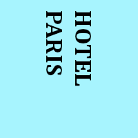
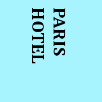
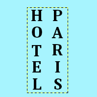

The Text tool adds text to your image in a new layer. Text can be edited directly on canvas. A text tool editor, which shows up on top of the canvas above the text box, allows you to quickly change some of the text characteristics (for selected text or newly typed text only).
As soon as you type your text, the text box appears on the canvas in a rectangular frame. If you draw the rectangular frame first, the text is automatically adapted to the frame size. You can enlarge this frame as you do with rectangular selections.

Right clicking on the text opens a context menu that allows you to copy, cut, paste, open a text file, change text orientation, and other text related commands.
You can also use a separate Text Editor window by checking the Use editor window option in the Tool Options dialog. You can also use the Text Options dialog to change the font, color and size of your text, and justify it, interactively.
In this chapter, tool options will be described. To know how to use the Text tool, please refer to text management.
There are different possibilities to activate the tool:
-
From the main menu: → .
-
By clicking the tool icon
 in the Toolbox.
in the Toolbox.
-
By pressing the T keyboard shortcut.
Normally, tool options are displayed in a window attached under the Toolbox as soon as you activate a tool. If they are not, you can access them from the main menu through → → which opens the option window of the selected tool.
- Fonte
-
Clique no botão de fontes para abrir o seletor de fontes dessa ferramenta, o que lhe mostrará uma lista das fontes instaladas.
Na parte inferior do seletor de fonte você encontrará alguns ícones que atuam da seguinte forma:
-
redimensionando a miniatura das fontes,
-
selecionando ver como lista ou ver como grade,
-
Abrindo o diálogo de seleção de fontes.
Escolha uma fonte entre as fontes previamente instaladas. Quando você seleciona uma fonte ela é automaticamente aplicada no seu texto.
![[Dica]](images/tip.png)
Dica Você pode usar a roda do mouse em cima do botão de fontes para mudar rapidamente a fonte do seu texto (mova o cursor para cima do botão de fontes, e não clique, apenas gire a roda do mouse).
-
- Tamanho
-
Essa opção controla o tamanho da fonte de acordo com diferentes unidades de tamanho selecionáveis.
- Use editor window
-
Permite a você usar uma janela de edição de texto ao invés de editar o texto diretamente na tela.
- Show on-canvas editor
-
Show a text tool editor on top of the canvas above the text box, which allows you to quickly change some of the text characteristics (for selected text or newly typed text only).
- Anti-serrilhamento
-
When enabled, this will render the text with much smoother edges and curves. This is achieved by slight blurring and merging of the edges. This option can radically improve the visual appearance of the rendered typeface. Caution should be exercised when using anti-aliasing on images that are not in RGB color space.
- Hinting
-
Usa o índice de ajuste da fonte para modificar os caracteres com o objetivo de produzir letras mais claras em tamanhos menores de fontes.
- Cor
-
Seleciona a cor do desenho que será desenhado. Por padrão a cor é a cor de Frente, como mostrada na Caixa de ferramentas. É possível selecionar uma nova cor a partir da janela de seleção de cores que se abre quando se clica sobre a caixa que mostra a cor atual.
Dica Você também pode clicar e arrastar a cor da área de cor da caixa de ferramentas diretamente para o texto, na imagem.
- Style
-
This allows you to select how to style the text. The following choices are available.
- Filled
-
The inside of each character is filled with a solid color defined by the Color option. This is the default.
- Outlined
-
The edges of each character are painted based on the settings below, and the inside is left transparent.
- Outlined and filled
-
A combination of the above two settings. The inside of each character is painted using the fill color.
Outline Options
Settings for Outlined and Outlined and filled.
- Outline Direction
-
Determines the direction from which the outline grows.
- Outer
-
The outline grows outward from the edges of each character.
- Inner
-
The outline grows inward from the edges of each character.
- Center
-
The outline is centered on the edges of each character.
- Solid color
-
If this is selected, the outline is painted in the solid color chosen here. To choose a color click the color button.
- Pattern
-
If this is selected, the outline is filled with the pattern chosen here. To choose a pattern click the button showing the current pattern, or start typing a name in the text field next to it; it will show patterns starting with the letters you entered.
Patterns work best with larger size outlines. This can be set by changing Line width.
- Anti-serrilhamento
-
Curves and lines at an angle may look jagged. When enabled, this setting makes this smoother.
- Line width
-
This sets the width of the text outline. By default, this is measured in pixels, but you can select a different measurement unit from the drop-down list.
- Cap style, Join style, Miter limit, Dash pattern, Dash preset
-
See Path stroking styles.
- Justificar
-
Permite que o texto seja ajustado de acordo com uma das quatro regras entre os ícones selecionáveis.
- Parágrafo
-
Controla o espaço à esquerda do texto da primeira linha de texto, a partir da margem.
- Adjust line spacing
-
Controla o espaço entre as linhas do texto. Essa configuração é interativa: cada alteração vai causar efeito imediatamente no texto exibido na imagem. O número não indica exatamente o espaço entre as linhas, mas sim quantos pixels terão de ser adicionados ou subtraídos do espaço original entre cada linha (o valor pode ser negativo). Pode ser muito útil para deixar blocos de textos mais compactos.
- Adjust letter spacing
-
Controla o espaçamento entre as letras. Neste caso o número também não mostra exato espaço entre as letras, mas sim quantos pixels irão ser adicionados ou subtraídos ao espaçamento original (o valor pode ser negativo).
- Caixa
-
Concerns the text box. The associated drop-down list offers two options:
Dinâmica: opção padrão. O tamanho da caixa de texto aumentará conforme você digita. Com isso você pode digitar o texto até ele sair da imagem. Será preciso que você pressione a tecla Enter para criar uma nova linha e continuar digitando. Esta opção de tamanho de paragrafo passa a afetar todas as linhas do texto. Se você alterar o tamanho da caixa de texto, a opção voltará a ser "Fixo".
Fixo: você precisará aumentar o tamanho da caixa de texto antes. Entretanto, os atalhos comuns estão ativos! A linha do texto é limitada pelo lado direito da caixa de texto e caso a ultrapasse será continuada na próxima linha. Essa não será uma nova linha real: o texto pode fluir para cima se você alargar a caixa de texto com o mouse. Você terá que apertar Enter para adicionar uma nova linha de verdade. O texto pode sair pela borda inferior da imagem. A opção de parágrafo atua apenas na primeira linha de cada bloco separado por “Enter”.
- Language
-
The text language may have an effect on the way the text is rendered. If you enter a letter in this field, you get a list of all available languages whose names begin with this letter. Select the language in which you are entering your text.
Right clicking on this field opens the context menu which allows you to paste language names from the clipboard.

This text editor is only available if the Use editor window option is checked in Tool Options.
Assim que você começar a escrever, uma camada de texto será criada e aparecerá no diálogo de camadas. Em uma imagem com uma camada dessas (a imagem que você está trabalhando, ou uma imagem do tipo .xcf), você pode continuar a edição de texto com um duplo clique direto no ícone da mesma no diálogo de camadas. Isso vai ativar a ferramenta de textos e colocar a camada em modo de edição. Claro, você pode aplicar a essa camada de texto as mesmas operações que você aplica às outras camadas: redimensionar, rotacionar, aplicar filtros, etc... No entanto, preste atenção em uma coisa: se você fizer qualquer operação que não seja edição de textos em uma camada criada por esta ferramenta, se você quiser editar o texto novamente, essas operações serão desfeitas — e você terá de volta o texto como é gerado pela ferramenta de texto, sem a aplicação de qualquer filtro, pintura ou transformação. O GIMP exibe uma caixa de diálogos para lhe avisar disso.
Para adicionar outro texto à sua imagem basta clicar com a ferramenta de texto ativa sobre uma camada que não seja de texto: um novo editor de texto irá aparecer e uma nova camada de texto será criada. Para passar de um texto para outro basta ativar a camada de texto correspondente e clicar sobre ela para ativar o editor.
As opções do editor de texto
All these options are also in the text context menu.
Vertical text (top-to-bottom writing) is supported and particularly useful for East-Asian writing systems, but also for anyone wishing to design fancy vertical text.
- Load text from file
-
Um texto pode ser carregado a partir de um arquivo de texto ao clicar no ícone de uma pasta no editor de texto. Todo o texto presente no arquivo será carregado.
- Limpar
-
Clear all the text.
- Da esquerda para a direita
-
Essa opção faz com que o texto seja inserido da esquerda para a direita, o que é o caso da maioria dos idiomas ocidentais e de alguns orientais.
- Da direita para a esquerda
-
Essa opção faz com que o texto seja inserido da direita para a esquerda, como é o caso de alguma das línguas orientais, como o Árabe (ilustrada no ícone).
- Vertical, right to left (mixed orientation)
-
Text is written top-to-bottom in columns, from right to left, and is rotated 90° clockwise.

- Vertical, right to left (upright orientation)
-
Text is written top-to-bottom in columns, from right to left, upright.

- Vertical, left to right (mixed orientation)
-
Text is written top-to-bottom in columns, from left to right, and is rotated 90° clockwise.

- Vertical, left to right (upright orientation)
-
Text is written top-to-bottom in columns, from left to right, upright.

- Usar fonte selecionada
-
Por padrão não será usada a fonte que você escolheu na janela de opções. Se você quer usá-la no editor, marque essa opção. Independente desta opção, a fonte escolhida é usada para desenhar o texto na imagem.
![[Nota]](images/note.png)
Nota See also Seção 2, “Texto”